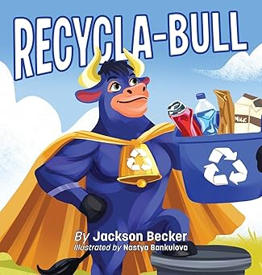

Published

Recycla-Bull Available Now
Children's Picture Book
When the animals on Farmer Jo's farm wake to find their home covered in litter, they call on RECYCLA-BULL to help clean it up. The heroic steer teaches the animals and young readers how to recycle right, reduce waste, and make sustainable choices to protect their natural resources.
This wonderful story introduces young readers to the world of recycling and encourages them to take good care of their planet.
In Progress
The books below are currently unpublished and unrepresented. Jackson is always happy to take on new beta readers or critique partners — reach out if interested.

Book 1
The United States of Magic — Book 1
Adult Fantasy · 108,000 words
Lucien Lamonde is a metallurgist with a score to settle. His quest for vengeance against the Silver King draws him and three unlikely allies into a world of mages, magic, and the chaos of the American Civil War — where the Confederate Army is the least of their problems.

Like Us
Star Stuff Like Us Drafting
Adult Science Fiction
Drawn from a lifelong love of the cosmos and inspired by NASA JPL travel posters, Star Stuff Like Us is Jackson's entry into science fiction — currently being drafted.

Book 2
The United States of Magic — Book 2 Drafting
Adult Historical Fantasy
The Civil War storyline continues with the original cast fighting for freedom. The stakes grow higher as the magic of the world threatens to tip the balance of the war.

Book 3
The United States of Magic — Book 3 Outlining
Adult Historical Fantasy
The planned series finale. A new magical threat emerges that will require former enemies to reconcile — and everything the cast has fought for to be put on the line one final time.